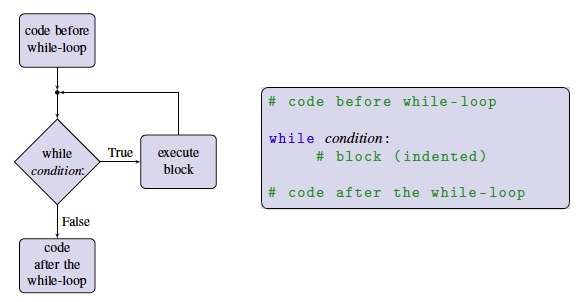

A while-loop is a loop whereby a code block repeatedly executes so long as a given condition is True. While-loops work a lot like an if-statement, they have very similar syntax — a condition followed by a block—but the block can be executed multiple times instead of just once. While-loops consist of the keyword while a Boolean expression (the loop condition) is followed by a colon, followed by a block of code. Below you can see the general form of a whileloop, and the corresponding flow of execution presented as a flowchart.

When execution of code reaches a while-loop, the loop’s condition is evaluated. The condition must be a Boolean expression yielding a result of True or False. If the condition is True, the block of code following the while-loop’s condition is repeated until the condition becomes False. Then the (unindented) code after the while-loop executes. Note that it is possible that the loop condition is False the first time it is encountered. If this is the case, then the block is never executed, and execution proceeds to the code after the while-loop.
The following example uses a while-loop to draw a trail of small circles up to the edge of the canvas.
The above variable x_position is used to keep track of the x-coordinate of the circle being drawing. Inside the while-loop, we draw a circle whose centre is at the current x_position, and then increase x_position by 10, so that the next circle we draw will be slightly further to the right. We keep doing this so long as the x_position is still on the screen.